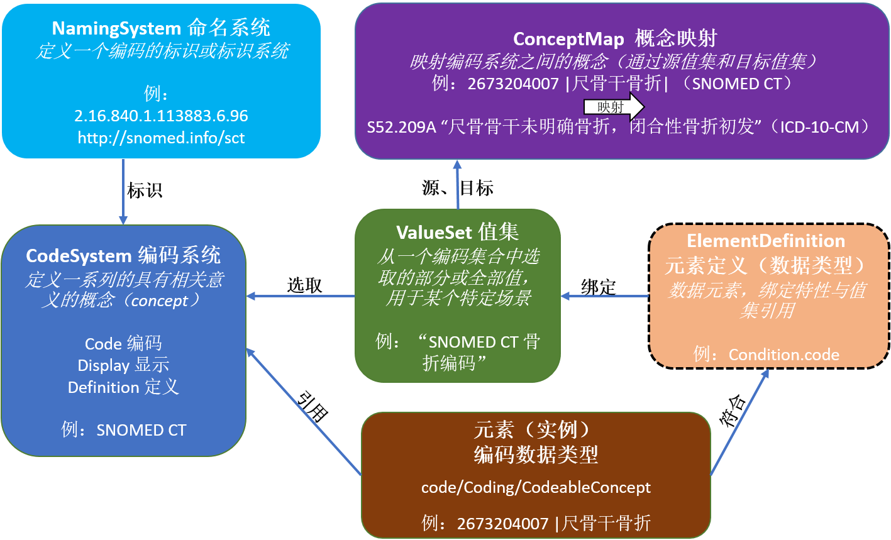

FHIR R4

 Terminology
TerminologyWork Group Vocabulary  | Standards Status: Informative |
The Terminology Module provides an overview and guide to the FHIR resources, operations, coded data types and externally-defined standard and FHIR-defined terminologies that are used for representing and communicating coded, structured data in the FHIR core specification and profiles. Collectively, these capabilities are used to provide the terminology service functionality required for supporting the use of coded data in FHIR resources throughout the specification as described in the other modules.
The primary terminology-related structures and their relationships are shown below:
|  |
Example: Condition profile with Condition.code slice bound to "SNOMED CT fracture codes" value set
[Note: The ElementDefinition type (shown with a dotted box) is described elsewhere in the specification in the Foundation and Conformance modules.]
The Terminology Module covers the following:
Resources
Terminology Service
Operations
|
|
|
Coded Data Types
Documentation
For security considerations for terminology services, see the Terminology Service page Security section. For more general considerations, see the Security and Privacy module.
on subsumption relationshipsThe following terminology resources have been tested and are being used in production tooling and now are normative or are expected soon to progress to normative.
Other terminology resources are still in earlier stages of development. We intend to continue to develop and test these resources and advance them through the Maturity Levels at Connectathons and elsewhere.
®© HL7.org 2011+. FHIR Release 4 (v4.0.0) generated on Thu, Dec 27, 2018. QA Page
Links: Search |
Version History |
Table of Contents |
Credits |
Compare to R3 |
 |
Propose a change
|
Propose a change